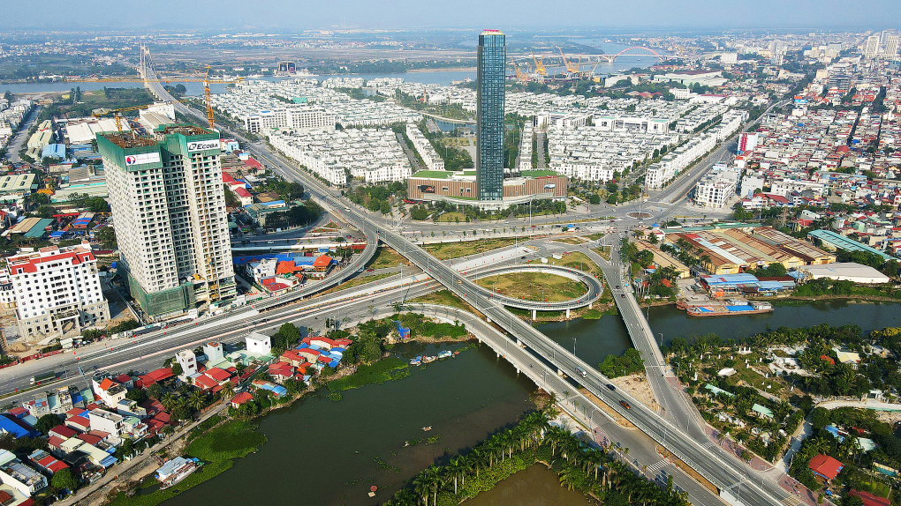

Hải Phòng được định hướng vào nhóm thành phố hàng đầu châu Á
Hải Phòng được định hướng có trình độ phát triển cao trong nhóm thành phố hàng đầu châu Á và thế giới vào năm 2045-2050.
Ngày 30/3, Phó thủ tướng Trần Hồng Hà phê duyệt điều chỉnh quy hoạch chung thành phố Hải Phòng đến năm 2040, tầm nhìn đến 2050.
Mục tiêu quy hoạch là xây dựng Hải Phòng trở thành thành phố đi đầu cả nước trong sự nghiệp công nghiệp hóa, hiện đại hóa; động lực phát triển của Bắc Bộ và cả nước. Thành phố phải có công nghiệp hiện đại, thông minh, bền vững; hạ tầng giao thông kết nối thuận lợi với trong nước và quốc tế; trọng điểm dịch vụ logistics và du lịch; trung tâm quốc tế về giáo dục, đào tạo, nghiên cứu, ứng dụng và phát triển khoa học - công nghệ, kinh tế biển.
Đây là đô thị trực thuộc trung ương, trọng điểm kinh tế biển cả nước; đầu mối giao thông, giao lưu trong nước và quốc tế.
Thành phố sẽ phát triển theo mô hình đô thị đa trung tâm và các đô thị vệ tinh. Cấu trúc đô thị gồm hai vành đai, ba hành lang, ba trung tâm.
Hai vành đai kinh tế là ven biển phát triển dịch vụ, du lịch, đô thị; công nghiệp dịch vụ từ cảng Lạch Huyện kết nối với mạng lưới khu công nghiệp đồng bằng sông Hồng và hệ thống cảng Hải Phòng.
Ba hành lang cảnh quan gồm sông Cấm, Lạch Tray, Văn Úc. Ba trung tâm đô thị là đô thị lịch sử và hành chính mới bắc sông Cấm; trung tâm thương mại, tài chính quốc tế (CBC) ở Hải An và Kinh Dương; đô thị sân bay Tiên Lãng.
Về định hướng phát triển vùng không gian ven biển, Hải Phòng ưu tiên phát triển các chức năng cảng, dịch vụ cảng, khai thác cải tạo luồng lạch, hệ thống đường dây đường ống kỹ thuật, không gian du lịch, vui chơi giải trí và bảo tồn hệ sinh thái rừng ngập mặn.
Theo quy hoạch, Hải Phòng sẽ xây dựng chiến lược phát triển hạ tầng thông tin băng thông rộng, tạo nền tảng cốt lõi phát triển đô thị thông minh. Trung tâm điều hành đô thị thông minh tại các đô thị mới sẽ được xây dựng, trong đó trung tâm ứng dụng chương trình kỹ thuật số, trung tâm dữ liệu bigdata khu vực Đông Nam Á ở Dương Kinh; xây dựng mới khu vực công nghiệp công nghệ thông tin (công nghiệp ICT) ở Nam Đình Vũ, Kiến Thụy, Tiên Lãng.
Thành phố sẽ nghiên cứu ứng dụng công nghệ số vào công tác quy hoạch đô thị, quản lý và vận hành hệ thống hạ tầng đô thị, các dịch vụ công, hoạt động xây dựng phát triển đô thị theo quy hoạch và trong các lĩnh vực kinh tế khác.
Hải Phòng sẽ đề xuất điều chỉnh ranh giới khu kinh tế Đình Vũ - Cát Hải để bổ sung đất phát triển công nghiệp, dịch vụ cảng tại Tràng Duệ 3, Lạch Huyện, Bến Rừng 2, Tam Hưng - Ngũ Lão, đảo Cái Tráp; nâng cấp trung tâm tài chính - thương mại và hội chợ triển lãm tại Lê Chân, Hồng Bàng.
Thành phố cũng sẽ xây dựng mới khu trung tâm thương mại tài chính tầm cỡ quốc gia, quốc tế (CBD) tại Hải An, Dương Kinh; các khu trung tâm dịch vụ thương mại mới gắn với dịch vụ cảng hàng không (Cát Bi, Tiên Lãng), đô thị mới Bắc sông Cấm (Thủy Nguyên) và đô thị mới phía Tây (An Dương).
Khu thương mại tự do trong khu kinh tế Đình Vũ - Cát Hải được định hướng phát triển, hình thành các tuyến phố thương mại, dịch vụ, cửa hàng miễn thuế; xây dựng chợ đầu mối nông sản, thủy sản ở Đồ Sơn, Thủy Nguyên, Vĩnh Bảo, An Lão.
Mạng lưới logistics khoảng 2.200-2.500 ha sẽ hình thành với trung tâm quốc tế và cấp vùng ở Đình Vũ - Cát Hải; trung tâm logistics cấp thành phố, chuyên dụng, hỗ trợ gắn với các đầu mối giao thương chính.
Đến năm 2030, Hải Phòng đủ khả năng đáp ứng 30-35 triệu lượt khách; đến 2040 đón 35-40 triệu lượt khách. Đồ Sơn phát triển thành trung tâm du lịch quốc tế. Khu Cát Bà, Long Châu, Bạch Long Vỹ kết hợp du lịch và bảo vệ sinh thái. Vịnh Hạ Long - Cát Bà sẽ được trình UNESCO công nhận di sản thiên nhiên thế giới.
Hải Phòng là thành phố trực thuộc Trung ương, đô thị loại 1 cấp quốc gia gồm 7 quận, 6 huyện ngoại thành và 2 huyện đảo với 223 xã, phường và thị trấn, dân số hơn 2 triệu. Thành phố nổi tiếng là cảng biển lớn nhất miền Bắc, cửa chính ra biển của Thủ đô Hà Nội và các tỉnh phía Bắc; là đầu mối giao thông quan trọng của Vùng kinh tế trọng điểm Bắc Bộ, trên hành lang hợp tác kinh tế Việt Nam - Trung Quốc.